Шапка. Адаптив
Контрольные точки
Для начала поговорим об ограничивающем контейнере и адаптивной адаптивной сетке. Есть два вида адаптива = это отзывчивость и по breakpoint. Для новичков я обычно учу делать по breakpoint. Вообще, в своих проектах я использую, сугубо, отзывчивость, но она может показаться слишком сложной для новичков.
Брейкпоинты - это контрольные точки останова.
Точки останова — это настраиваемая ширина, которая определяет, как ваш адаптивный макет ведет себя на разных устройствах
Основные концепции
- Точки останова — это строительные блоки адаптивного дизайна. Используйте их, чтобы контролировать, когда ваш макет может быть адаптирован для определенного окна просмотра или размера устройства.
- Используйте медиа-запросы для создания своего CSS по точкам останова. Медиа-запросы — это функция CSS, позволяющая условно применять стили на основе набора параметров браузера и операционной системы. Мы чаще всего используем min-width в наших медиа-запросах.
- Мобильный прежде всего, адаптивный дизайн — это цель. CSS Bootstrap нацелен на применение минимального количества стилей, чтобы заставить макет работать с наименьшей точкой останова, а затем наложение стилей, чтобы настроить этот дизайн для больших устройств. Это оптимизирует ваш CSS, сокращает время рендеринга и обеспечивает отличный опыт для ваших посетителей.
Доступные точки останова
Зависит от проекта. Обычно заказчик сам подкидывает нужные переходы уже в макете. Если их нет, то Bootstrap включает в себя шесть контрольных точек по умолчанию, иногда называемых уровнями сетки, для быстрой сборки. :
- Extra extra large ≥1400px
- Extra large ≥1200px
- Large ≥992px - здесь часто меняются размеры шрифтов, немного меняется сетка, иногда меню летит в бутер.
- Medium ≥768px - меню точно в бутер, меняются размеры шрифтов, сетка обычно становится списком.
- Small ≥576px - зависит от того, что в данный момент не влезает или плохо смотрится
- X-Small <576px - эти ширины должны смотреться нормально вплоть до 320
/* PC */ @media (max-width: 1087px)
Первый breakpoint у нас будет 1057 пикселей. Но, к ограничивающему контейнеру нужно сразу добавить отступы безопасности. Они, как правило, по 15 пикселей слева и справа. Соответственно, нам нужно расширить наш ограничивающий контейнер на 30 пикселей: 1057 + 30 = 1087.
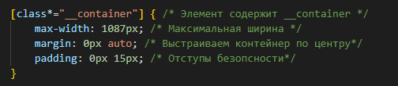

На этом первом breakpoint мы сузим ограничивающий контейнер до 970 пикселей.

Смотрим - вот они отступы безопасности. То есть viewport не прикасается к контенту и срабатывает на нужном breakpoint. В частности, на кнопке здесь хорошо видно - при ширине 1100 пикселей, приближающейся к заданному breakpoint остается заданный отступ. Дальше breakpoint срабатывает и контейнер меняет ширину, тем самым мы адаптируем сайт. Если что-то ломается на этом разрешении, то на этом breakpoint мы и будем менять.

/* TABLET */ @media (max-width: 991.98px)
Следующий breakpoint у нас 992 пикселя - это планшетное расширение. Меняем ширину на 750 пикселей

И здесь видим, что у нас уже начались проблемы и уже здесь, не дойдя до 750 пикселей, нам нужно шапку адаптировать на втором breakpoint в 992 пикселя

Давайте сразу этим и займемся, а потом продолжим писать сетку для мобайл 768 пикселей, где у нас меню точно не поместится и полетит в бургер. Придется все кардинально перестраивать, поэтому на ширине 768 пикселей, мы уберем ограничения по ширине
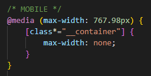
Почему дробные числа? Все дело в том, что тот же Ipad-планшет, он имеет ширину в обычном состоянии, не в альбомном, 768 пикселей. И, если здесь поставить 768, то стили для мобилок появятся уже на планшете. Поэтому приходится немножко уменьшать на размер, чтобы в действительности стили заработали именно на устройствах меньше, чем планшеты. Та же история и на breakpoint в 992 пикселя для ПК - мы пишем 991.98 пикселей.
Возможно, мы добавим еще один breakpoint для маленьких мобилок. Пока оставим, как есть и займёмся нашей проблемой в нашей шапке. Конечно, было бы нагляднее, если бы мы видели декор, который у нас в макете присутствует, но попробуем и без него обойтись.
Настройка @media (max-width: 991.98px)
В момент, когда у нас объекты не помещаются, мы должны искать варианты, где нам найти место. Процесс адаптива, он связан с тем, что мы ищем свободное место, ищем пробелы и удаляем их, что-то уменьшаем, но при этом должен быть баланс между удобством пользования и размещением объектов.
Что я могу сделать в этой ситуации? У меня здесь довольно широкий объект под кнопку. Соответствено, который заложен под декор.
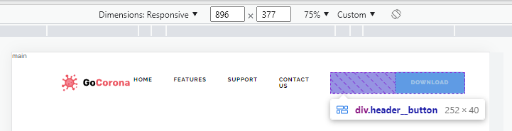
Но, в процессе адаптива я этот декор сдвину - он у меня будет выступать не на 122 пикселя, а меньше.

Поэтому, на втором breakpoint я могу уменьшить этот объект, скажем, на сто пикселей - поставлю 170.
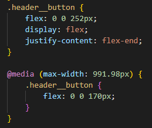
Потом мы, конечно, это подгоним. Вот мой объект в 170 пикселей. Мы видим, что меню поместилось, но, так скажем, опасно.
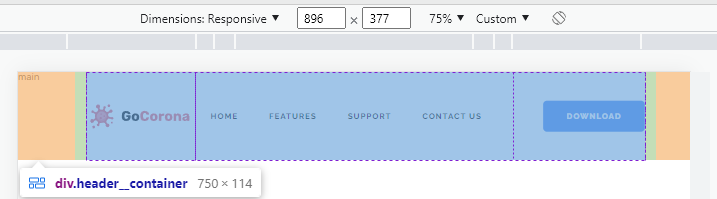
Мы можем еще поработать над свободным местом, поигравшись вот здесь с отступом - 40 пикселей довольно большой отступ, можно его урезать
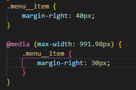 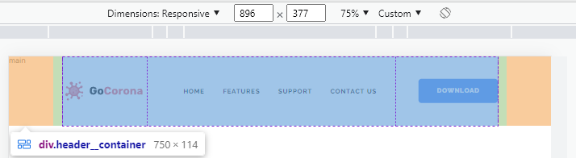
Отлично - я считаю, что таким образом и пользоваться удобно и мы все эти объекты разместили.
Также, уже на планшете, шапка в 114 пикселей выглядит довольно громоздкой по высоте. Поэтому, почему бы нам это дело не поправить. И уже что-то вырисовывается
 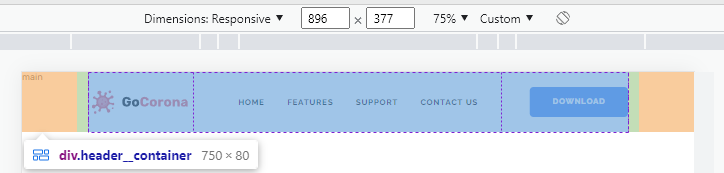
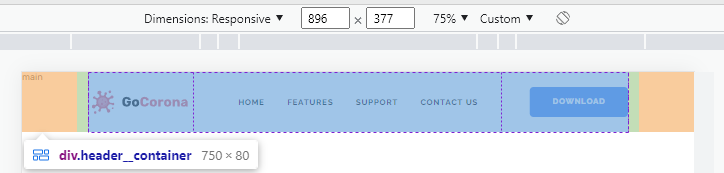
И, раз у нас столько много записей для шапки на этот breakpoint, то давайте мы вынесем все это дело в отдельный breakpoint. Когда мы работаем со сборщиками, этот процесс автоматизирован и группировка медиа-запросов происходит автоматически. Тут, к сожалению, у нас такой возможности нет, поэтому мы вручную группируем

При этом помним, что все объекты, которые изменяли для адаптива, должны находиться в стилях выше медиа-запросов.
/* MOBILE */ @media (max-width: 767.98px). "Бургер"
Последний breakpoint и здесь нам уже нужно что-то кардинально менять. Сейчас мне нужно придумать - что делать с меню? Как я уже говорил, я не буду здесь использовать java script - соответственно, меню "бургер" у меня здесь не будет использоваться. В то же время, давайте попробуем сделать меню "бургер", но без java-script
Что мне для этого нужно? Мне нужен сам "бургер". Поэтому я немножко перепишу здесь меню.
Прежде всего, мне нужна кнопка бургера. Поэтому, в наш html в блок "header__button" я добавлю кнопку open с классом icon-menu - для открытия меню. И кнопку close с классом close-icon-menu - для закрытия меню.
И, также мне надо "menu__list" обернуть в "menu__body" - немножко поменяю структуру.
Теперь оба блока будут собраны таким образом
Дальше следует реализовать, чтобы при нажатии на кнопку "open", которую мы добавили в "header__button", у меня открывался ящик "menu__body".
С интерактивом и идентификаторами разберемся позже, а сейчас мне нужно создать три полоски бургера для открытия меню. Я буду лепить "бургер" по классу icon-menu.
Создание "бургера"
Начнем с того, что мы имеем родительский блок header__button с исходным размером 252*40

В блоке header__button мы расположили два братских блока: блок кнопки "DOWNLOAD" button button-blue размером 130*40 и блок будущего "бургера" icon-menu, который еще не имеет ширину, а высота определяется высотой родительского блока в 40 пикселей
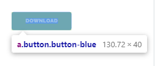 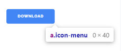
С этого и начнем. Прежде всего, требуется зафиксировать наш "бургер" на месте справа от кнопки. Поэтому, задаем для icon-menu относительное позиционирование
- position
- Устанавливает способ позиционирования элемента относительно окна браузера или других объектов на веб-странице.
- relative
- Относительное позиционирование. Положение элемента устанавливается относительно его исходного места. Добавление свойств left, top, right и bottom изменяет позицию элемента и сдвигает его в ту или иную сторону от первоначального расположения.
Сразу зададим размеры для icon-menu - ширину через flex, высоту через height
- flex
- Сокращённое свойство, которое позволяет указать параметры элемента, чтобы он эффективно заполнял доступное пространство. Элементы могут быть растянуты пропорционально с учётом заданного соотношения или сжаты, чтобы целиком вместить все элементы без переносов в одну строку.
- flex: none | [ flex-grow flex-shrink? || flex-basis ]
- Значение по умолчанию
- flex-grow:0
- flex-shrink:1
- flex-basis:auto
- flex-grow
- Определяет, сколько пространства может занимать флекс внутри контейнера. В качестве значения принимаются числа, они задают пропорции каждого флекса. К примеру, если для всех элементов установлено значение 1, то они получатся равного размера. Если какой-то элемент получил значение 2, то его размер будет в два раза больше остальных.
- Значение по умолчанию 0
- flex-shrink
- Устанавливает коэффициент сжатия флексов в контейнере и задаёт, насколько элемент будет уменьшаться по отношению к другим флексам, чтобы разместить все элементы в одну строку.
- Значение по умолчанию 1
- flex-basis
- Определяет основу флекса, которая является начальным размером элемента. Похоже на свойства width и height, к которым добавляется содержимое элемента.
- Значение по умолчанию auto
Прописываем данные свойства для icon-menu.
- Позиционируем его фиксированно относительно его исходного места position:relative.
- Флекс внутри контейнера не зависит от размера других флексов flex-grow:0
- При размещении элементов в одну строку, элемент не будет уменьшаться по отношению к другим флексам flex-shrink:0
- Ширина флекса будет 30 пикселей flex-basis:30px
- Высота блока будет 18 пикселей height:18px
Проверим, что получилось


Отлично, справа от кнопки появился прямоугольник 30*18 блока нашего "бургера" icon-menu.
Рисуем бургер
Займемся созданием трех полосок. Я заранее поместил в icon-menu элемент <span>. В нем создадим центральную полоску, задав элементу высоту 2 пикселя (ширина уже имеется - она равна ширине блока 30 пикселей) и закрасим фон черным цветом

Вернемся к icon-menu - добавим ему свойства и создадим флекс, который визуализирует полоску
 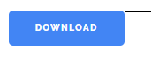
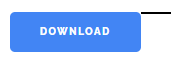
- display
- Многоцелевое свойство, которое определяет, как элемент должен быть показан в документе.
- flex
- Элемент ведёт себя, как блочный и выкладывает содержимое согласно флекс-модели.
- flex-direction
- Задаёт направление основных осей в контейнере и тем самым определяет положение флексов в контейнере.
- column
- Главная ось располагается вертикально и направлена сверху вниз.
- justify-content
- Определяет, как браузер распределяет пространство вокруг флекс-элементов вдоль главной оси контейнера. Это делается после того, как применяются размеры и автоматические отступы, за исключением ситуации, когда по крайней мере у одного элемента flex-grow больше нуля. При этом не остаётся никакого свободного пространства для манипулирования.
- space-between
- Флексы равномерно распределяются по всей строке. Первый и последний элемент прижимаются к соответствующим краям контейнера.
И дальше будем работать с псевдоэлементами, чтобы вывести еще 2 полоски

- ::before
- Применяется для отображения контента до содержимого элемента, к которому он добавляется. Работает совместно со свойством content. По умолчанию ::before создаёт строчный элемент.
- ::after
- Используется для вывода контента после содержимого элемента, к которому он добавляется. Работает совместно со свойством content. По умолчанию ::after создаёт строчный элемент.
- content
- Используется с псевдоэлементами ::before и ::after для вставки сгенерированного содержимого. Содержимое при этом должно браться в двойные или одинарные кавычки.
Таким образом, мы задали псевдоэлементам свойства сгенерировать полоску идентичную, созданной нами в icon-menu span. В результате ::before выводит полоску ДО содержимого, которое является такой же полоской, а ::after выводит свою полоску ПОСЛЕ содержимого.
Теперь у меня есть ссылка в виде трех полосок, которая по клику обращается к объекту с id="menu".
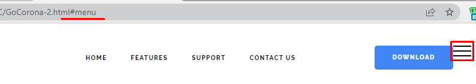
Естественно, сейчас доделаем стили, чтобы смотрелось красиво и выровняем наш "бургер" по вертикали - добавим для header__button свойство align-items: center
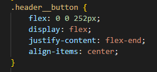
И сделаем левый отступ от иконки icon-menu через margin
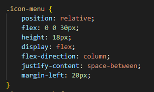
Теперь отлично получилось
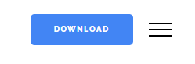
Естественно, пока нам нужно "бургер" скрыть.
/* MOBILE */ @media (max-width: 767.98px). Адаптив "Бургера"
Для того, чтобы бургер появлялся только на мобилках и был скрыт на ПК и планшетах, мы всю нашу конструкцию переносим в медиа-запрос для breakpoint на устройствах меньше 767.98 пикселей. А в стилях ПК и планшетов убираем icon-menu через display: none

Проверяем и видим, что наш "бургер" появляется только при достижении ширины устройства меньше 767.98 пикселей
 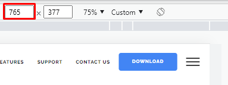
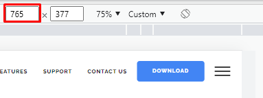
Мы видим, что бургер появляется в нужный момент и в этот момент меню нам нужно скрыть. Поэтому нам нужно меню, а именно menu__body, скрыть на разрешении меньше 768 пикселей.
Мы его не скрываем, а просто не устанавливаем для верхних разрешений и фиксим через position: fixed на разрешении меньше 768 пикселей. И это логично, т.к. этот класс мы создавали именно под "бургер"
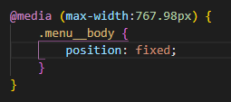
- position
- Устанавливает способ позиционирования элемента относительно окна браузера или других объектов на веб-странице.
- fixed
- Фиксированное позиционирование. По своему действию это значение близко к absolute, но в отличие от него привязывается к указанной свойствами left, top, right и bottom точке на экране и не меняет своего положения при прокрутке веб-страницы.
Зададим координаты с размерами и посмотрим, что у нас получается. У нас меню теперь фиксировано к верху и левому краю, другими объектами не зажимается. Но, сами объекты при меньшем разрешении, все-равно не очень получается уместить


Сейчас мы немного подкорректируем кнопку "DOWNLOAD". Обратимся к button, который находится внутри header__button и немного изменим внутренние отступы, которые у нас сейчас по 14 и 30 пикселей и проверим. Все-равно, не очень помещаемся
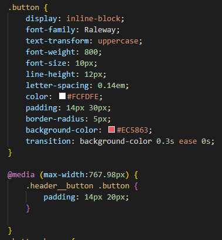

Мы можем уменьшить логотип, но тоже не очень хорошо. Поступим следующим образом, пусть это не так нужно сейчас, как хочу показать вам один лайфхак, что в таких ситуациях можно делать.
Когда логотипы состоят из иконки и надписи, то надпись мы можем скрыть при определенном разрешении. Значит, 40 пикселей у нас логотип
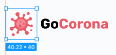
Единственное, что - его можно сделать на еще меньшем разрешении в 479.98 пикселей на маленьких мобилках, т.к. на обычных мобилках у нас еще есть место, а потом мы прячем. Поэтому, используем еще один breakpoint. Подпишем его /* MOBILE SMALL */, т.е. маленькие мобилки
Добавляем в медиа-запрос header__logo, в верхних разрешениях мы его не стилизовали, так там было все, как надо. Здесь задаем ему размер 40 пикселей и делаем логотип независимым от других объектов через flex. И через overflow сделаем так, чтобы отображалась только область внутри этого размера, а остальное будет скрыто. И все у нас получилось - все элементы прекрасно помещаются

Кнопку "DOWNLOAD" я не советую убирать. Это, судя по всему, самая важная кнопка сайта, поэтому я не советую куда-то прятать ее. Вот такой лайфхак с тем, что мы прячем кусок логотипа, он очень юзабельный
В итоге, все-таки у нас бургер есть и теперь сверстаем само меню.
Адаптив меню
Обращаемся к menu__body на разрешении меньше 767.98 пикселей. Стоит отметить, что мы сейчас все придумываем, т.к. у нас нет макета открывающегося меню и нам нужно думать самим какой-то стиль.
Давайте фон оставим белым - добавим свойство в уже имеющийся медиа-запрос.
Для всего списка меню menu__list главную ось расположим вертикально сверху вниз, флексы выровняем по центру строки и, также, выровняем все флексы вдоль поперечной оси.
Смотрим, что получилось
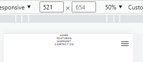
Теперь отступы. Слева и справа сделаем по 15 пикселей, сверху большой должен быть - сделаем 90 пикселей, снизу - 30 поставим.
Дальше, юзабилити - очень увеличиваем размер шрифта. У нас есть место - дайте возможность пользователю удобно пользоваться вашим меню "бургером". Поэтому в menu__link на этом медиа-запросе сделаем шрифт в 20 пикселей.
И, естественно, какой-то отступ нужен для самих пунктов. Ранее в menu__item у нас был задан для них только правый margin в 30 пикселей, т.к. элементы располагались горизонтально. Теперь же, у нас вертикальный список, поэтому боковой отступ убираем, а устанавливаем нижний в 25 пикселей. Таким образом, раздвинем пунты между собой по вертикали

У последнего элемента можно отступ отобрать через псевдокласс :last-child
- :last-child
- Псевдокласс задаёт стиль последнего элемента в группе братских элементов (имеющих одного родителя).
Настройка адаптива для логотипа
Итак, меню мы сделали и теперь нам нужно доставать логотип наверх. Мы можем сделать это сразу на верхних разрешениях, чтобы меньше было обращений к контрольным точкам и сайт будет более оптимизированный
Также, нам нужно достать кнопку "DOWNLOAD", которая button. В принципе, мы можем весь header__button достать, если добавим ему относительное позиционирование и z-index, как только добавили для логотипа
Отлично, меню у нас есть - теперь набросаем стили для закрывающей кнопки.
Закрывающая кнопка. Стили
Сделаем закрывающую кнопку в виде крестика. Чтобы создать крестик, мне нужно создать квадратный блок для close-icon-menu, в который мы поместим две полоски. Им мы зададим наклоны в 45 градусов, уперев концы в углы блока. Таким образом, при пересечении они создадут ровный крестик
Чтобы создать полоски, мне нужны два псевдоэлемента

Используя свойство transform, зададим для каждой полоски наклоны, чтобы при пересечении они образовали крестик
- transform
- Трансформирует элемент, в частности, позволяет его масштабировать, вращать, сдвигать, наклонять, а также комбинировать виды трансформаций, перечисляя функции трансформации через пробел.
- rotate()
- Поворачивает элемент в двумерном пространстве на заданный угол относительно точки трансформации, задаваемой свойством transform-origin.
- deg
- Угол поворота в градусах
Чтобы визуализировать крестик, нам еще нужно абсолютно позиционировать сами полоски крестика к блоку закрывающей кнопки. Для этого ей нужно добавить относительное позиционирование, чтобы абсолют сработал по заданным координатам
Отлично, осталось только отодвинуть крестик вправо
Теперь необходимо скрыть крестик до необходимого момента, добавив ему свойство display: none в общих стилях
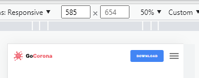
Таким образом, на больших разрешениях обе кнопки скрыты, а при открытии на мобильном экране появляются три полоски открывающей кнопки бургера, благодаря заданному display: none для .icon-menu. Меню скрыто отрицательным левым отступом left: -100%. Крестик закрывающей кнопки появится только, когда обращение присвоит ему display: flex
Осталось настроить интерактив "открытие-закрытие" бургера.
Открытие-закрытие меню
Собственно, в момент, когда мы нажимаем на "бургер" и обращаемся по id к этому объекту, он получает псевдо-класс :target. Мало кто про это знает, но так есть.
- :target
- Для перехода к выбранному фрагменту документа, в адресе пишется символ # и указывается имя идентификатора. К примеру, в адресе http://www.w3.org/TR/css3-selectors/#target-pseudo происходит переход к элементу, атрибут id которого задан, как target-pseudo. Такая запись адреса называется «целевой элемент». Псевдокласс :target применяется к целевому элементу. Иными словами, к идентификатору, который указан в адресной строке браузера.
Вы можете использовать псевдокласс :target для создания lightbox без использования JavaScript. Этот метод основан на способности якорных ссылок указывать на элементы, которые изначально скрыты на странице. После этого, CSS изменяет их display на видимый.
Сейчас наше меню скрыто. По :target мы можем вернуть наш объект при нажатии на "бургер". Я хочу, чтобы при клике на "бургер" :target получал бы объект header. Соответственно, по этому объекту menu__body будет вылетать.
id="close" вешаем на header__container
Также, когда header в таргете (нажали полоски), тогда горизонтальные полоски открывающей кнопки icon-menu исчезают - добавим display: none. А крестик закрывающей кнопки close-icon-menu появляется - добавим display: flex

Отличный получился интерактив. При нажатии на полоски - выезжает меню, исчезают полоски и появляется крестик для закрытия. При нажатии на крестик - меню заезжает, исчезает крестик и появляются полоски. "Бургер" работает и это без java-script.
Единственное, что нужно сделать - это добавить к .menu__body свойство overflow: auto для того, чтобы, если у нас появится больше пунктов в меню, то появится скролл и пользователь смог добраться до нижних пунктов

Здесь еще следует сделать прокладку, чтобы при скроле меню верхние пункты не поднимались под самый верх экрана, а заезжали бы под шапку. Шапка на этом разрешении у нас 80 пикселей. Эта прокладочка исчезнет, когда у нас меню закрыто, так как ее стили написаны только, когда у header будет target

"Бургер" у нас родился окончательно. Больше в секции <header> нам ничего не требуется делать. Переходим в секцию <main> и начинаем верстать контент.